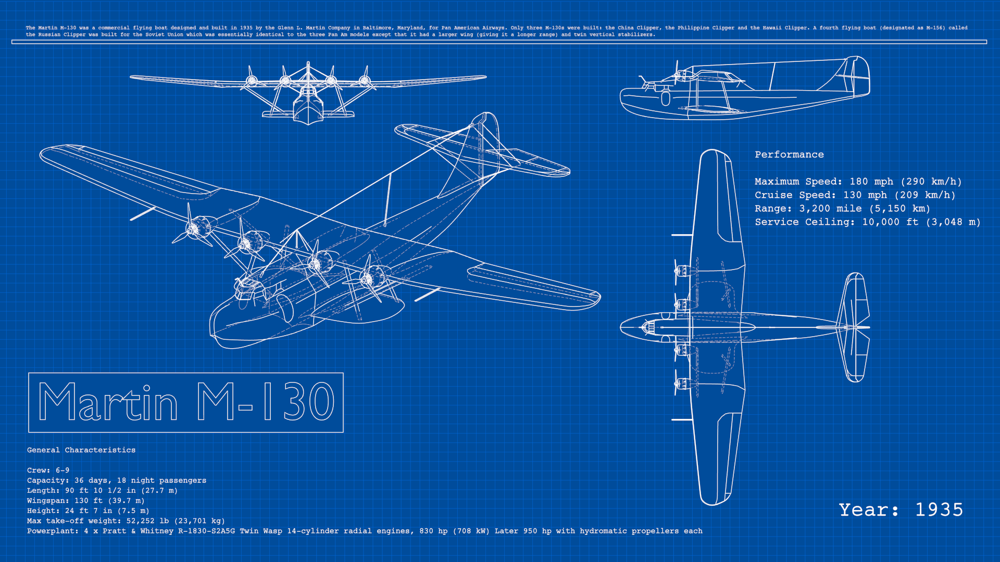

Вступ¶
Що таке FreeStyle?¶
FreeStyle is an edge- and line-based non-photorealistic (NPR) rendering engine. It relies on mesh data and Z-depth information to draw lines on selected edge types. Various line styles can be added to produce artistic ("hand drawn", "painted", etc.) or technical (hard line) looks.
Два режими оброблення: «Скриптування на Python» -- Python Scripting та «Редактор Параметрів» -- Parameter Editor -- надають потужну різноманітність стилів лінії та результатів. Стилі лінії, такі як Японський великий пензель, мультик, синька, товщина за глибиною вже попередньо написані в Python. Режим Редактора Параметрів дозволяє інтуїтивно редагувати функції, такі як пунктирні лінії та легкий уклад одночасно багатьох типів ліній та визначень ребер. Поверх цього всього з введенням модифікаторів стилю лінії межі немає!

Всюдихідний баггі від Rylan Wright (RONIN). CC BY. (File:AtvBuggy.zip). |

By mato.sus304. CC BY-SA. (File:Mato_sus304_cut02.zip). |

Мультикова сцена від студії OHA Studio © Mechanimotion Entertainment. (the blend-file). |

Рендер синьки літака Martin M-130 року 1935-го від LightBWK. CC0. Попередження: важкий файл! розроблений для надзвичайного стрес-тесту Blender'а та може дати збій Blender'а. (File:M-130Blueprint.zip). |
Більш мистецьких робіт може бути знайдено на Release Note Artwork Showcase.
Велика Картина -- The Big Picture¶
- Активуйте FreeStyle стягом .
- Устави FreeStyle розміщені у новій вкладці Render Layers.
- Один шар зобража може мати тільки одну карту огляду. Карта огляду -- view map містить устави визначення країв (Crease Angle, перемикач Culling, перемикач Face Smoothness, перемикач Material Boundaries, Sphere Radius та просунуті опції Kr Derivative Epsilon).
- Карта огляду може містити одночасно кілька наборів ліній.
- Набір ліній -- line set керує тим, які типи ліній та виділення будуть рендеритися на основі ліній з вашої сцени.
- Кожен набір ліній використовує один стиль ліній (який може бути спільним між одночасно кількома наборами ліній).
- Стиль ліній -- line style розповідає зображувачу, рендереру FreeStyle, як рендерити пов'язані набори ліній у термінах кольору, альфа, товщини та інших аспектів.

Структурна схема карти огляду та процесів для FreeStyle.
Відомі обмеження¶
- Висока вимога до пам'яті: Усі сітьові об'єкти на шарі зобража завантажуються одночасно.
- Підтримуються лише ті сітьові об'єкти, що мають грані. Наступні види сітей ігноруються:
- Сітьові грані з дротяними (wire) матеріалами.
- Сітьові грані з повністю прозорими матеріалами.
- Сітьові грані з матеріалами, для яких увімкнена опція Cast Only.
- Прозорі грані обробляються як безпрозорі грані.
- Жодні ребра на перетині граней ще не визначаються.
- Маскові шари не працюють з FreeStyle.
- Результати рендерингу Freestyle не мають жодної інформації про глибину Z.
- Панорамні камери не підтримуються.